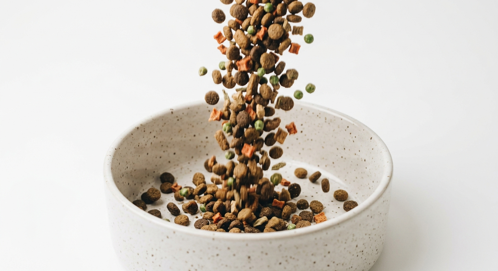
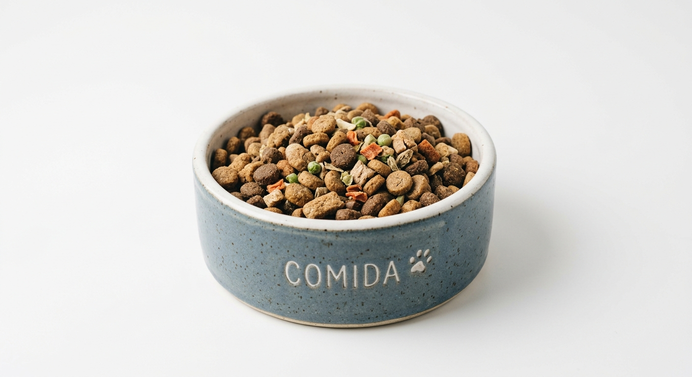
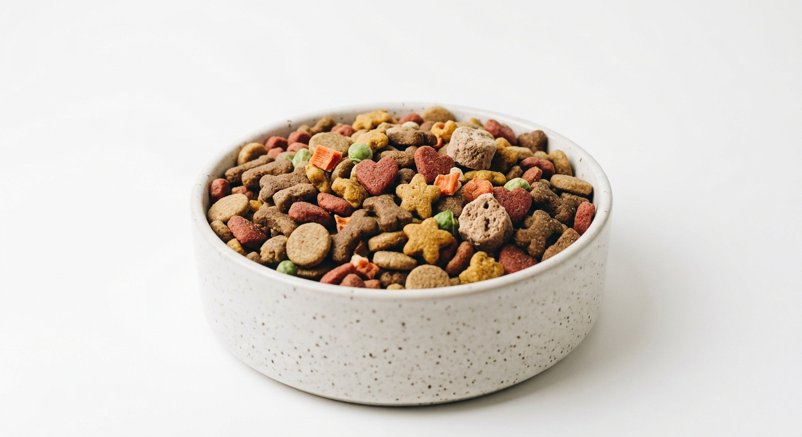

Colección
Fórmulas maestras.
Una selección de dietas basales y funcionales desarrolladas con precisión clínica y respeto absoluto por la materia.
Mantenimiento

Alpha: Angus & Kale
Res de pastoreo con vegetales de hoja orgánica para sostener la masa magra y la densidad energética.
Ver fórmula →
Hipoalergénico

Kura: Cordero Silvestre
Proteína novel de cordero de libre pastoreo con calabaza orgánica, para sistemas digestivos sensibles.
Ver fórmula →
Funcional

Veta: Pescado Blanco & Algas
Captura salvaje de pescado blanco con microalgas marinas, rica en ácidos grasos esenciales.
Ver fórmula →